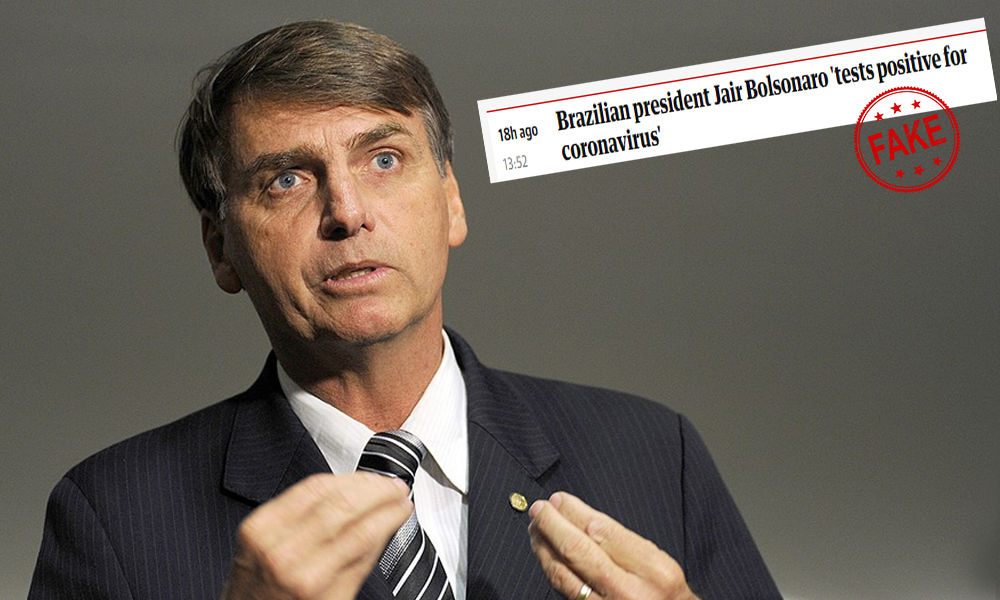
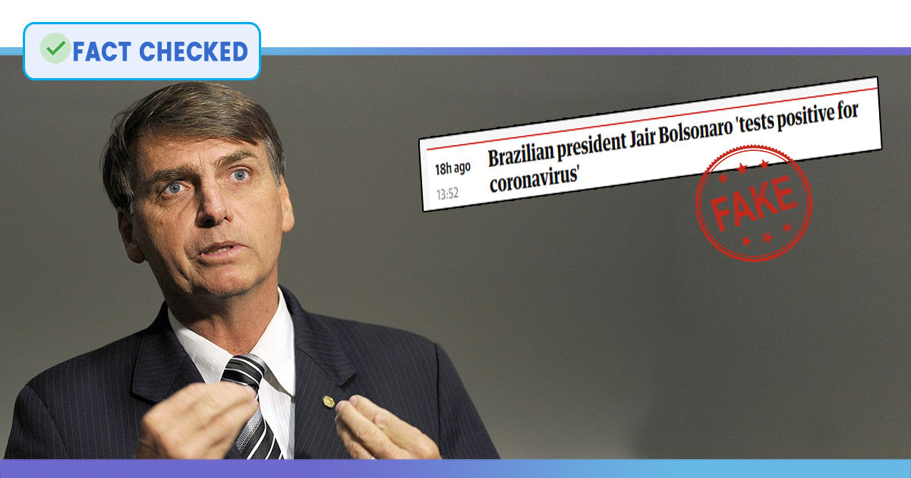

Fact Check: No, Brazilian President Jair Bolsonaro Has Not Tested Positive For Coronavirus
In another case of fake news surrounding the COVID-19 pandemic, several media giants reported that Brazilian president Jair Bolsonaro has tested positive for the novel coronavirus.
Reminding readers that Bolsonaro had met with U.S. President Donald Trump in Florida earlier this week, On March 13, between 9 and 11 AM Eastern, The Guardian (United Kindom), CNA (Taiwan) and Fox News (United States) misreported this claim.
This led to an avalanche of photos on social media.The photos mostly showed Bolsonaro and Trump shaking hands.
Some of those posts also went on to suggest that the U.S president needed to be tested for COVID-19 as soon as possible, just like Vice President Mike Pence, who also had met with Bolsonaro.
Brazil Senator that traveled to US with Bolsonaro tests positive for coronavírus, he says https://t.co/9LlAHDgVzO— Sam Cowie (@SamCowie84) March 14, 2020
Brazilian president Jair Bolsonaro has tested positive for the novel coronavirus.
The claim is not true.
Fox News reported that his son Eduardo Bolsonaro has said that his father has tested negative for coronavirus.
'Reports out of Brazil had initially indicated Bolsonaro had tested positive, and his son appeared to confirm this to Fox News earlier Friday, adding that further testing was being done to confirm the diagnosis and the second set of testing was expected later in the day.However, in a subsequent appearance on 'America's Newsroom,' Eduardo denied his father had ever tested positive,' reads the report.
On being asked if he could confirm his father had first tested positive for the virus and what had happened in between then, Bolsonaro was quoted as saying 'The information I have is the results that just came up telling that he is negative for coronavirus.I never listened that it was positive in the first exam.This is something that I don't know.But, uh, everything's good now.'
A note published by columnist Leandro Mazzini at O Dia, a very well-known Rio de Janeiro-based newspaper had led The Guardian and CNI to misreport.
At 9:55 AM, the headline at O Dia's website stated 'Bolsonaro tests positive on his first analysis' (translated from Portuguese)
The Guardian then re-posted the story with the following headline: 'Brazilian president Jair Bolsonaro 'tests positive for coronavirus'
This led to a frenzy, which in turn led to the misinterpreted claim going viral.
Therefore, we can conclude Bolsnaro is not suffering from COVID-19.
If you have any news that you believe needs to be fact-checked, please email us at factcheck@thelogicalindian.com or WhatsApp at 6364000343
Claim Review : Brazilian president, Jair Bolsonaro has tested positive for the novel coronavirus
Posted On: 2020-03-14T00:00:00
Posted By: Aditi Chattopadhyay


Content Date: 2020-03-14
Download Date: 2021-05-30
Document ID: L0C04CPMK